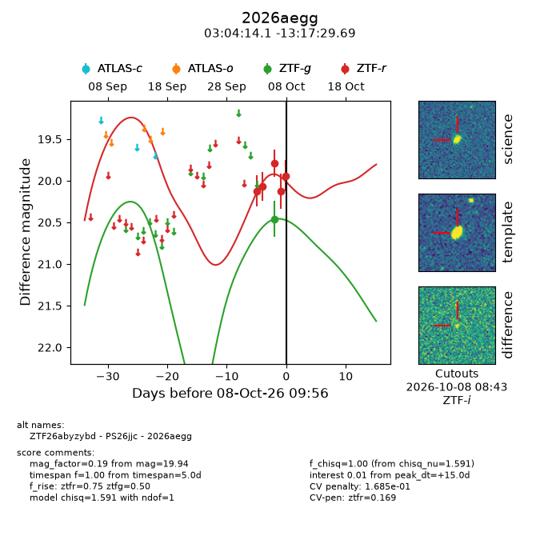
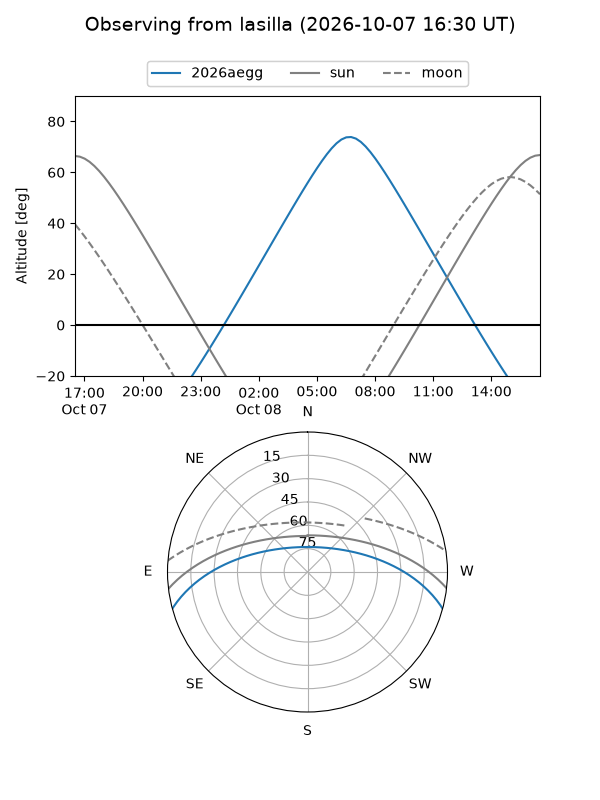
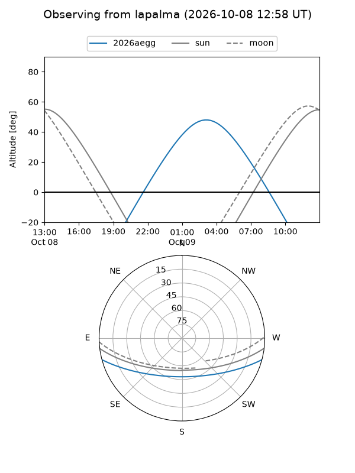
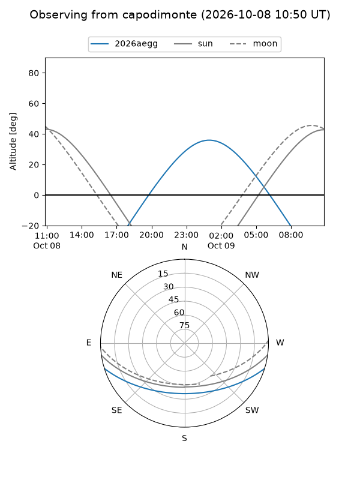
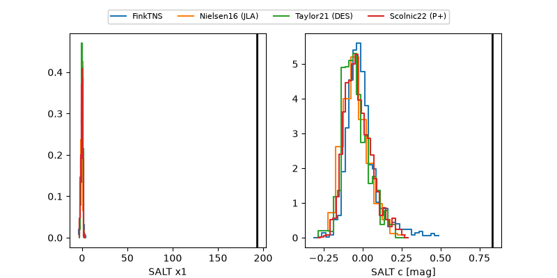

2026aegg
Target 2026aegg at 2026-10-08 09:59
Aliases and brokers:
FINK-ZTF: ztf.fink-portal.org/ZTF26abyzybd
Lasair-ZTF: lasair-ztf.lsst.ac.uk/objects/ZTF26abyzybd
ALeRCE-ZTF: alerce.online/object/ZTF26abyzybd
YSE-PZ: ziggy.ucolick.org/yse/transient_detail/2026aegg
TNS name: wis-tns.org/object/2026aegg
Direct TNS query: direct search
alt names
ZTF26abyzybd (ztf,fink_ztf)
2026aegg (tns,yse)
PS26jjc (panstarrs)
Coordinates:
equatorial (ra, dec) = 46.0587,-13.29158
equatorial (HMS+DMS) = 03:04:14.09,-13:17:29.69
galactic (l, b) = (195.5590,-56.05783)
Flags:
TNS type: nan
peak dt: +15.0
likely cv: !!
Photometry:
last ztfg=20.46, ztfr=19.94
1 ztfg, 5 ztfr detections
Lightcurve

Visibility



Additional plots
